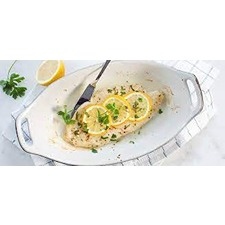

Homepage
Gerechten
Ingrediënten:
Visfilets
Citroen
Knoflook
Olijfolie
Bereiding:
Bak de visfilets in een pan tot ze gaar zijn.
Meng olijfolie met citroensap en geperste knoflook voor de saus.
Serveer de gebakken vis met de citroen-olijfoliesaus.
